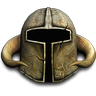
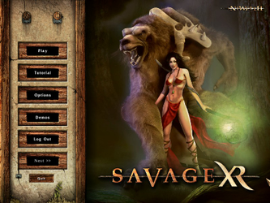
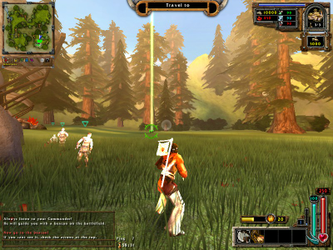

Savage XR
Dieser Artikel wurde für die folgenden Ubuntu-Versionen getestet:
Dieser Artikel ist mit keiner aktuell unterstützten Ubuntu-Version getestet! Bitte diesen Artikel testen und das getestet-Tag entsprechend anpassen.
Zum Verständnis dieses Artikels sind folgende Seiten hilfreich:

Savage XR  macht es dem Spieler möglich zwischen Echtzeitstrategie und Egoshooter zu wählen. In jedem Team übernimmt ein Spieler die Rolle des Commanders. Aus der Perspektive des Commanders ist das Spiel ein RTS. Er baut Gebäude, erforscht neue Waffentechnologien und gibt Befehle. Er bildet jedoch (bis auf Worker) keine Einheiten aus. Die Rolle der Einheiten wird komplett von den anderen Spielern übernommen, welche in Egoshooterperspektive versuchen das gegnerische Hauptgebäude zu zerstören. Das Spiel bietet auch keinen Einzelspielermodus, es gibt im Internet jedoch genügen Server auf denen man spielen kann. Auch für LAN-Partys ist das Spiel gut geeignet, es braucht aber mindestens 4 Spieler (2 Commander, 2 Player). Savage XR basiert auf Savage - The Battle for Newerth , welches von Firma S2Games entwickelt und am 1. September 2006 als Freeware freigeben wurde.
macht es dem Spieler möglich zwischen Echtzeitstrategie und Egoshooter zu wählen. In jedem Team übernimmt ein Spieler die Rolle des Commanders. Aus der Perspektive des Commanders ist das Spiel ein RTS. Er baut Gebäude, erforscht neue Waffentechnologien und gibt Befehle. Er bildet jedoch (bis auf Worker) keine Einheiten aus. Die Rolle der Einheiten wird komplett von den anderen Spielern übernommen, welche in Egoshooterperspektive versuchen das gegnerische Hauptgebäude zu zerstören. Das Spiel bietet auch keinen Einzelspielermodus, es gibt im Internet jedoch genügen Server auf denen man spielen kann. Auch für LAN-Partys ist das Spiel gut geeignet, es braucht aber mindestens 4 Spieler (2 Commander, 2 Player). Savage XR basiert auf Savage - The Battle for Newerth , welches von Firma S2Games entwickelt und am 1. September 2006 als Freeware freigeben wurde.
|  |  |
| Menü | Tutorial |
Installation¶
Desura¶
Das Spiel kann über die Internetseite oder den Client zur Spieleliste hinzugefügt und gestartet werden [1].
Projektseite¶
Den Installer von der Projektseite  herunterladen. Anschließend für die Datei Ausführrechte [2] setzen und die Installation einleiten [3]:
herunterladen. Anschließend für die Datei Ausführrechte [2] setzen und die Installation einleiten [3]:
chmod +x xr_setup-1.0-cl_lin_prod.bin ./xr_setup-1.0-cl_lin_prod.bin
Im nachfolgenden Installationprozess wird u.a. nach der gewünschten Spracheinstellung und dem Installationsverzeichnis (z.B. ~/Spiele/savage-xr) gefragt. Abschließend kann man auswählen ob ein Menüeintrag und eine Verknüpfung auf dem Desktop angelegt werden soll.
Server¶
Ein eigener Server kann über
./dedicated_server.sh
gestartet [2] [3] werden. Detaillierte Informationen findet man im Wiki der Projektseite.
Problemlösung¶
Tastenkürzel¶
| Tastenkürzel | |
| Taste(n) | Funktion |
 | Steuerung / Dodge durch mehrfaches drücken der Tasten |
| E | Betreten / Belagern |
 | Angriff |
 | Blocken |
 | Waffenzoom |
| Springen | |
| Strg | Kriechen |
|
1 -
5 / (Mausrad) | Waffe wechseln |
| M | Minikarte ein/ausblenden |
| T | Teamchat |
| Y + Nachricht + ⏎ | Nachricht ans eigene Team senden. |
| U + Nachricht + ⏎ | Nachricht an den Kommander senden. |
| Tab ⇆ | Teamstatus |
Eine vollständige Übersicht kann dem Handbuch (PDF) entnommen werden.

Infobox¶
| Savage XR | |
| Originaltitel: | Savage - The Battle for Newerth |
| Genre: | Echtzeitstrategie / Egoshooter |
| Sprache: | |
| Veröffentlichung: | 2004+ |
| Publisher: | S2 Games |
| minimale Systemvoraussetzungen: | 600 MHz Prozessor / 128MB+ Arbeitsspeicher RAM / 600MB Festplattenspeicher / 64MB+ GeForce oder Radeon Grafikkarte / 56k Modem |
| Medien: | Download |
| Strichcode / EAN / GTIN: | - |
| Läuft mit: | nativ |
- Erstellt mit Inyoka
-
 2004 – 2017 ubuntuusers.de • Einige Rechte vorbehalten
2004 – 2017 ubuntuusers.de • Einige Rechte vorbehalten
Lizenz • Kontakt • Datenschutz • Impressum • Serverstatus -
Serverhousing gespendet von